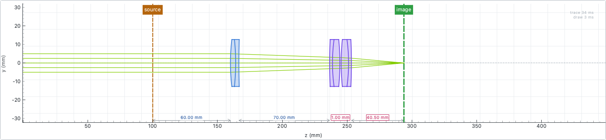
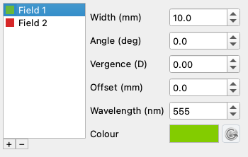
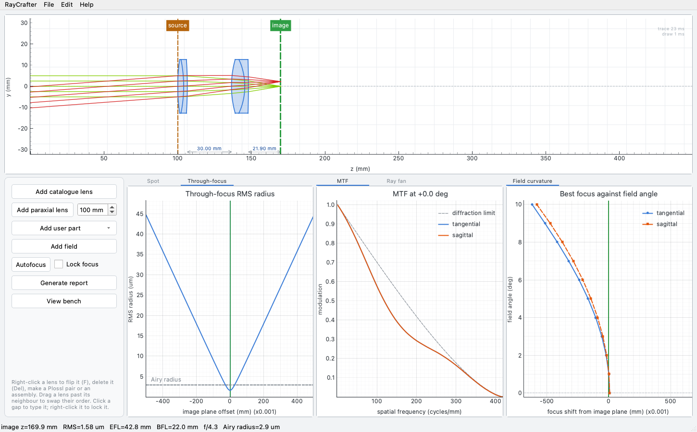
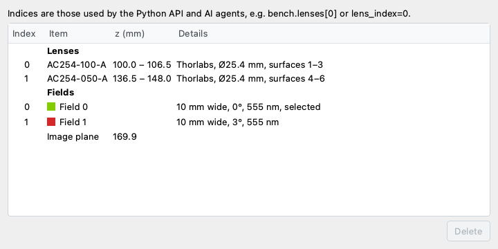

A tour
What is on the screen, and how to use it.
Contents: The window · Lenses · Gaps and locks · Assemblies and user parts · Fields · The source plane · Plots · Bench list · Undo · Shortcuts
The window
The top half is the side view: lenses on an optical axis, with rays travelling left to right, a brown dashed line for the source plane and a green dashed line for the image plane. The distances between them are written along the bottom. The lower row has the control panel on the left, then three groups of plots. A line along the bottom gives the image position, RMS spot size, focal length (EFL), back focal length, f-number and Airy radius.

A new window starts with one lens, an ACT508-200-A achromat. The File menu starts, opens and saves designs (see Files and reports), Edit has Undo and Redo, and Help opens these pages.
Adding and moving lenses
- Click Add catalogue lens to open the lens picker. Type part of a part number in the search box
(for example
AC254), or filter by coating and focal length. Select a lens and click Insert. - Click on the axis to put the lens where you want it. Esc or right-click cancels.
- Drag a lens along the axis; the plots follow. Drag it past its neighbour to swap their order.
- Right-click a lens to flip or delete it.
- For an ideal lens, set a focal length next to Add paraxial lens and click the button.
- Autofocus moves the image plane to the best-focus position; tick Lock focus to keep it there as you change the design. You can also drag the green image line.

Gaps and locks
A gap is the air distance along the axis, from the back of one lens to the front of the next, or from the last lens to the image plane.
- Type a gap: click its label, enter the distance and press Return. All later lenses and the image plane shift together, so no other gap changes. A value that would make surfaces overlap, or put the image plane less than 1 mm behind the last lens, is refused and the smallest allowed value is shown.
- Lock a gap: right-click its label and choose Lock gap. A locked label has a box round it. Lenses joined by locked gaps move as one.
- Lock the gap to the image plane and the image plane moves with the last lens. Autofocus and Lock focus are then unavailable. Likewise, while Lock focus is ticked, that gap cannot be typed or locked.


Assemblies and user parts
An assembly is a group of neighbouring lenses that moves and flips as one. It is drawn in purple.
- Put the lenses where you want them relative to each other.
- Lock the gaps between them.
- Right-click one of the lenses and choose Make assembly.
- F, or Flip assembly, turns the whole group round: the order of the lenses is reversed and each one is flipped.
- The gaps inside an assembly are fixed. Split assembly releases the lenses so you can change them. Deleting one of its lenses also dissolves it.
- Save as user part stores the assembly. The Add user part button then places a copy of it in any design. See where parts are kept.
Plossl pairs
Put two identical positive catalogue lenses next to each other, right-click one and choose Make Plossl. The two are turned to face each other and set 1 mm apart, and become an assembly. The option is greyed out if the neighbour is a different lens or is too far away (more than about two lens thicknesses).
Fields (beams)
Click Add field to open the field window. Each field is a beam with its own width, angle, vergence, offset, wavelength and colour. Use + and − to add and remove fields, and click one to select it. The spot diagram and side view show every field. The through-focus, MTF, ray fan and field curvature plots, the f-number and Autofocus use the selected field.


The source plane
A field’s width, offset, angle and vergence are those it has at the source plane, which can stand for a light source, a scan mirror or a stop. By default it sits at the front of the first lens and moves with it.
- To place it elsewhere, right-click the source label and unlock it. Then drag the dashed line, or click the gap in front of the first lens and type the distance.
- Dragging the line moves only the source plane. Typing the gap leaves the source plane where it is and moves the lenses and image plane.
- While unlocked, the source plane stays put when lenses move, and no lens can be moved in front of it.
- Offset is the height of the beam’s centre at the source plane. With an offset of 0, beams at every angle pass through the axis there, as at a scan mirror.
Analysis plots
- Spot: where the rays land on the image plane, with the Airy disc circle for comparison.
- Through-focus: how the spot size changes as the image plane moves.
- MTF: modulation transfer function of the selected field, against the diffraction limit.
- Ray fan: ray error across the pupil.
- Field curvature: best-focus position against field angle.
Fast plots update as you drag. The slower ones (MTF, ray fan, field curvature) fade while you drag and refresh when you stop.


Generate report puts all of these in one HTML page, with explanations.
The Bench list
View bench lists the lenses (with vendor, size and surface numbers), the fields and the image plane. Click a row to highlight that item in the side view. You can delete lenses and fields from here.


The numbers in this list are the ones scripts and AI agents use. They start at 0, so the field window’s “Field 1” is field 0 here.
Undo and redo
Use the Edit menu or the usual keys. One action, such as a whole drag or a typed value, is one step. Starting, opening or importing a design clears the history.
Shortcuts
| F | Flip the lens, or assembly, under the pointer |
| Delete or Backspace | Delete the lens under the pointer |
| Esc | Cancel placing a lens |
| Ctrl/Cmd + Z | Undo |
| Ctrl/Cmd + Shift + Z | Redo |
| Ctrl/Cmd + N, O, S | New, open, save |